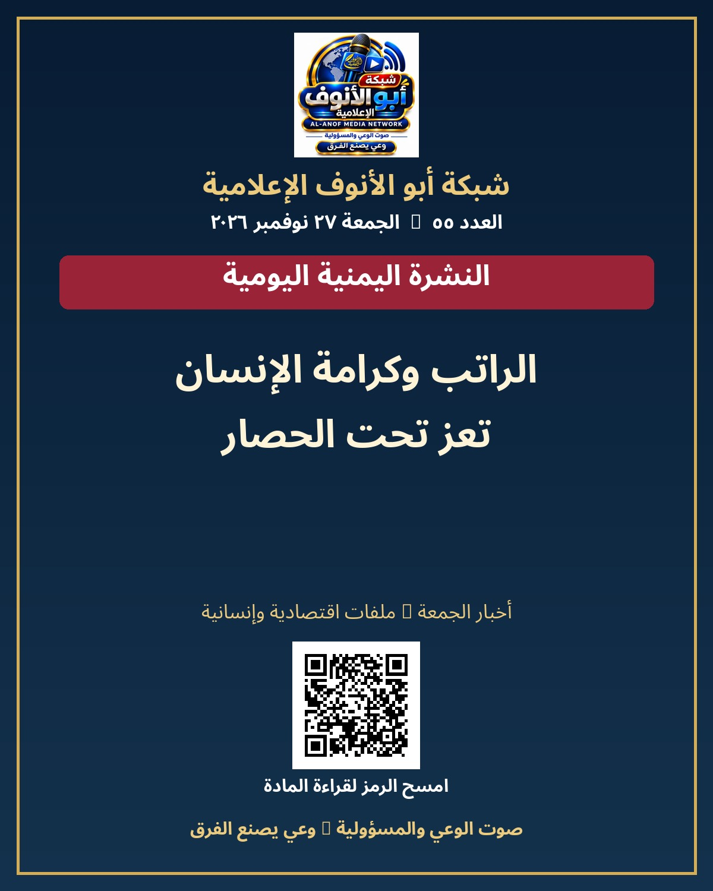

ملف الرواتب والعلاوات
قراءة في إجراءات الحكومة وأزمة المرتبات في اليمن.
قراءة التحليلصوت الوعي والمسؤولية • وعي يصنع الفرق • الخبر من مصدره… والتحقق قبل النشر

قراءة في إجراءات الحكومة وأزمة المرتبات في اليمن.
قراءة التحليلالاستجابة الإنسانية والنازحون والمسؤوليات القانونية.
قراءة التحليلالمالية تعلن إنجاز إجراءات بدل الغلاء والعلاوات
الحكومة تتجه لمعالجة التسويات المتوقفة منذ 2013
مأرب تشيع التربوي نبيل السياغي
حملة مشتركة لإزالة النقاط العشوائية في المهرة
الأمم المتحدة ترتب لقافلة مساعدات إلى تعز
الأخبار المكتملة تُنشر في الموقع والشريط دون انتظار العدد. المواد الناقصة تبقى مسودات محلية غير ظاهرة حتى تُستكمل وتُعتمد. كل خبر منقول يُنسب إلى مصدره.